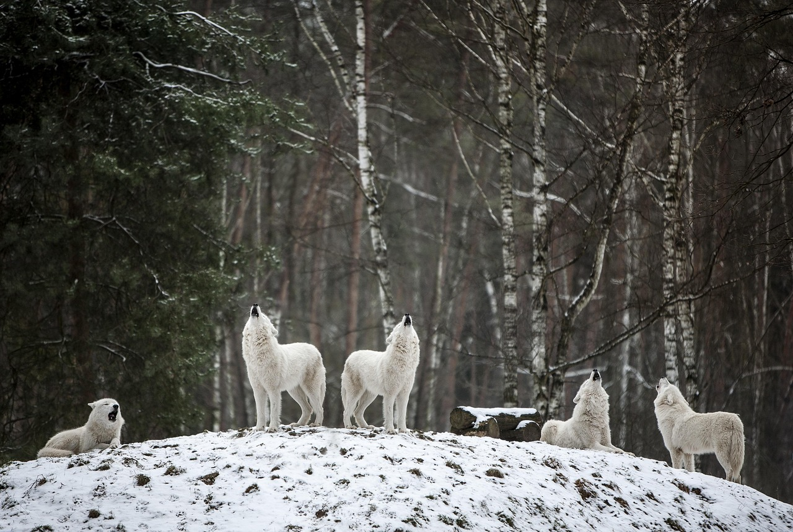
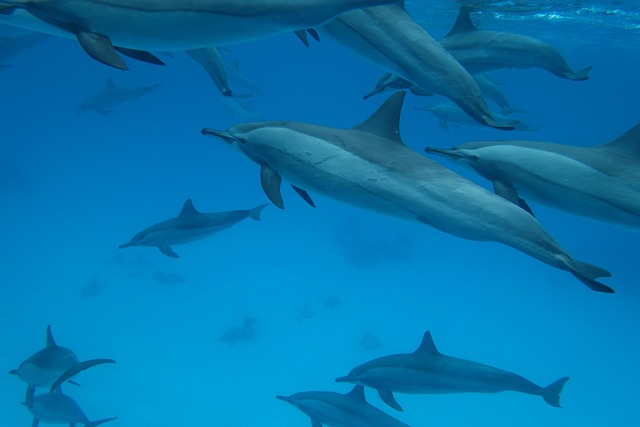
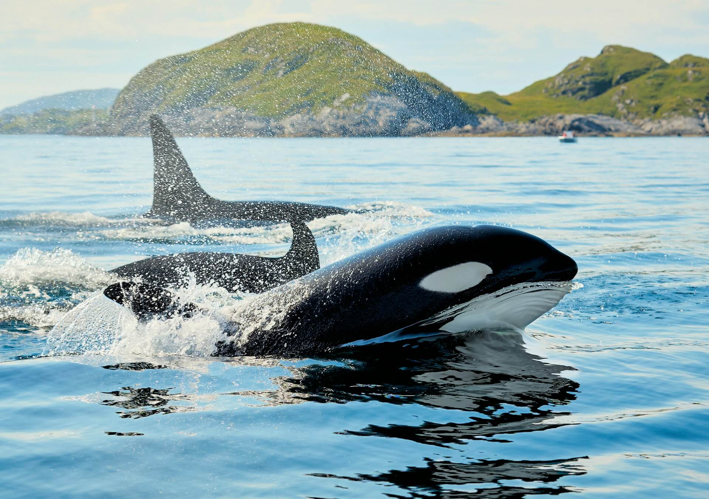
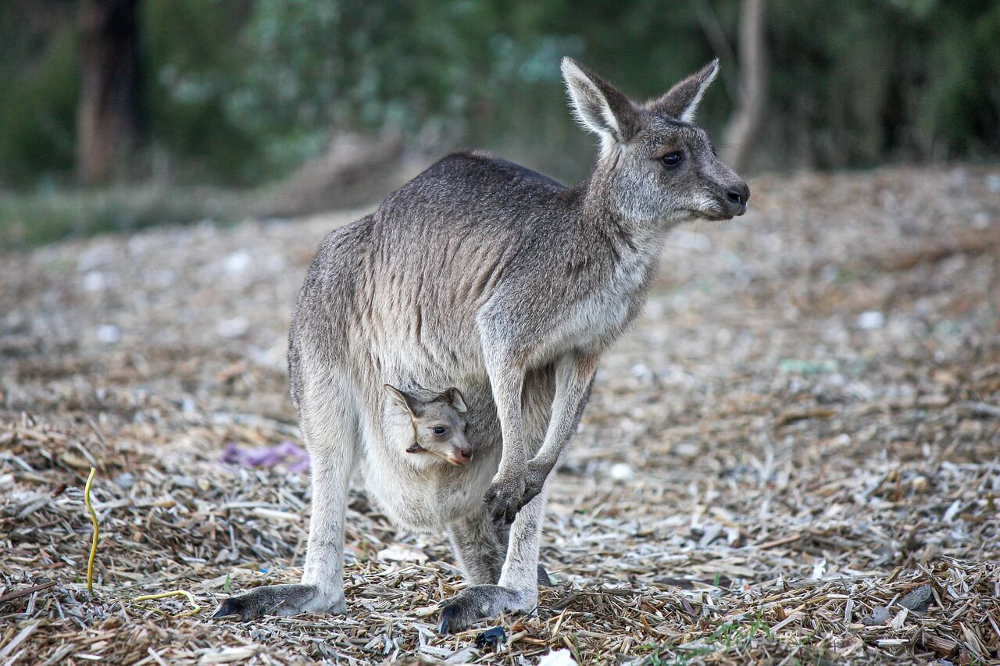

Communication between wolves
Wolves use body language to communicate and organize their groups.
Read moreDolphins have passed the mirror test, a significant indicator of self-awareness. In the test, dolphins were able to recognize themselves in a mirror, which is a cognitive ability that many animals, including humans, possess.
Unlike many animals, dolphins show these behaviours without extensive training, suggesting they spontaneoulsy understand the mirror reflects themselves rather than another dolphin.
Read more


Wolves use body language to communicate and organize their groups.
Read more
Studies show that some females retain male-like plumage to avoid social harassment.
Read more
A dialect is learned through social interaction rather than inherited genatically.
Read more
The emotional bond between a kangaroo mother and her joey is very strong.
Read moreThe Ethogram is dedicated to sharing news and discoveries about animal behaviour from around the world. We aim to make ethology accessible to everyone by highlighting research, conservation efforts, and fascinating wildlife stories.